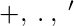
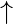
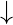
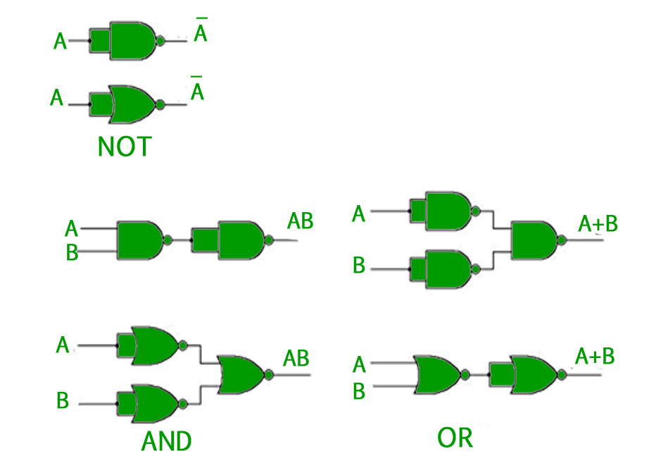
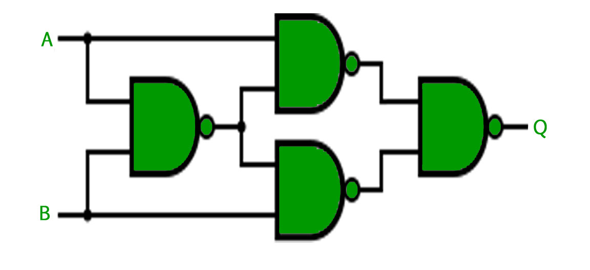

In Boolean Algebra, there are three basic operations,  which are analogous to disjunction, conjunction, and negation in propositional logic. Each of these operations has a corresponding logic gate. Apart from these there are a few other logic gates as well.
Logic Gates –
- AND gate(.) – The AND gate gives an output of 1 if both the two inputs are 1, it gives 0 otherwise.
- OR gate(+) – The OR gate gives an output of 1 if either of the two inputs are 1, it gives 0 otherwise.
- NOT gate(‘) – The NOT gate gives an output of 1 input is 0 and vice-versa.
- XOR gate(
 ) – The XOR gate gives an output of 1 if either both inputs are different, it gives 0 if they are same.
) – The XOR gate gives an output of 1 if either both inputs are different, it gives 0 if they are same.
Three more logic gates are obtained if the output of above-mentioned gates is negated.
- NAND gate()- The NAND gate (negated AND) gives an output of 1 if both inputs are 0, it gives 1 otherwise.
- NOR gate()- The NOR gate (negated OR) gives an output of 1 if both inputs are 0, it gives 1 otherwise.
- XNOR gate()- The XNOR gate (negated XOR) gives an output of 1 both inputs are same and 0 if both are different.
Every Logic gate has a graphical representation or symbol associated with it. Below is an image which shows the graphical symbols and truth tables associated with each logic gate.

Universal Logic Gates –
Out of the seven logic gates discussed above, NAND and NOR are also known as universal gates since they can be used to implement any digital circuit without using any other gate. This means that every gate can be created by NAND or NOR gates only.
Implementation of three basic gates using NAND and NOR gates is shown below –

For the XOR gate, NAND and NOR implementation is –
- Implemented Using NAND –

- Implemented using NOR –

Note – For implementing XNOR gate, a single NAND or NOR gate can be added to the above circuits to negate the output of the XOR gate.
GATE CS Corner Questions
Practicing the following questions will help you test your knowledge. All questions have been asked in GATE in previous years or in GATE Mock Tests. It is highly recommended that you practice them.
1. GATE CS 2013, Question 21
2. GATE CS 2012, Question 10
3. GATE CS 2007, Question 33
4. GATE CS 2005, Question 15
Reference –
Digital Design, 5th edition by Morris Mano and Michael Ciletti